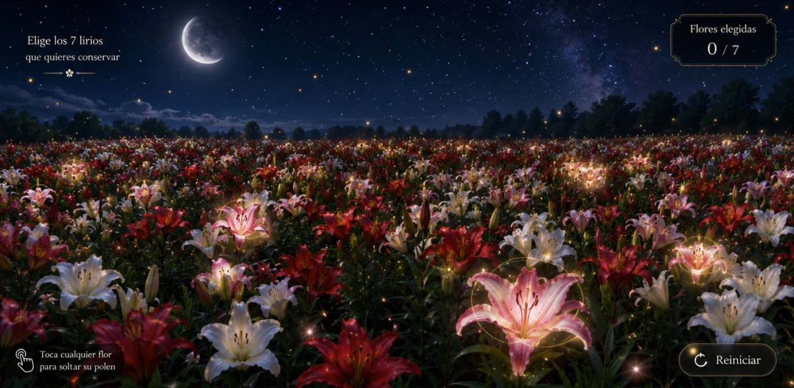

ELIGE LOS 7 LIRIOS
que quieras conservar
☝
Toca cualquier flor para soltar su polen
↻ Reiniciar
TU RAMO
Toca cada flor
Cada lirio guarda un mensaje para ti.
← Volver al campo
UN CAMPO PARA TI
Entre todas las flores, siete guardan algo especial
Toca las flores. Todas liberarán polen, pero las que brillan formarán tu ramo.
Entrar al campo
×
UN MENSAJE ESCONDIDO
Para Dani